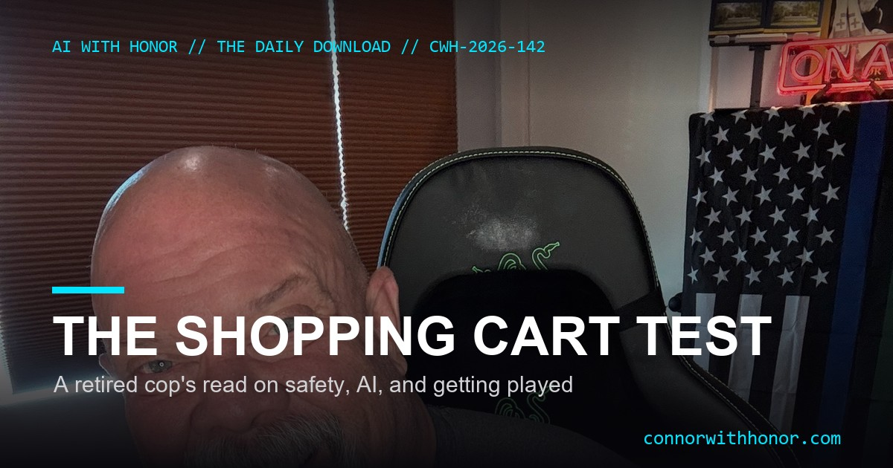

The Shopping Cart Test
July 6, 2026 // Daily Download // Connor MacIvor
I worked just about every bureau the Los Angeles Police Department had, and I did a good stretch of it in traffic, out of Southeast, 18 Tom 34, South Central. My partner Sam and I rolled on everything. If we could get there first, we did, the shooting calls, the robberies in progress, the stolen cars, the whole nine yards, and then we would hand it back to patrol and clean their traffic collisions so they could stay on the hot calls. You see a lot of the city that way, from Harbor to 77th to Southwest, and you start to notice patterns that most people never get taught. So let me give you three of them today. It starts with shopping carts. Stay with me.
Story 1: The Shopping Cart Test
I live in the Santa Clarita Valley now. It is where my real estate business is, and it is where this first tip comes from. When you drive into a city that has a real crime problem, look at the shopping carts. They are everywhere. In the parking lot, out on the street, wedged between cars, stuck on a median, abandoned wherever the last person stopped caring. Nobody walks them back. In Santa Clarita, most of the time, they are put away. Returned to the corrals where they belong, not left to bake in the lot.
That is not a small thing, and it is not about carts. It is about whether the people who live in a place still feel any ownership of the shared space they move through every day. Somebody who takes 12 to 14 seconds to walk a cart back is telling you something about the whole street. So the next time you are thinking about moving somewhere, do yourself a favor and drive through the neighborhoods you are considering at a few different times. Watch how the carts are being handled. It is a free, honest read that no brochure and no listing photo will ever give you.
The Phone Call Almost Nobody Makes
Here is the second half of that same investigation, and it costs one phone call. Call the local law enforcement, the sheriff or the police non-emergency line, and just ask. Say, I am thinking about relocating to your city, I am looking at Valencia, or Northbridge, or North Park, or Saugus, or Canyon Country, or Newhall, or Castaic, or Stevenson Ranch, and I want to know what you think about these specific neighborhoods. Give them the area. They can tell you if there is a frequently visited problem address nearby, or a resident the department already knows well. Even if you are only coming up from the San Fernando Valley to the Santa Clarita Valley, make that call. We have the Los Angeles County Sheriffs out here. Use them.
Let me tell you why I believe in this one. Years ago, as a brand-new cop, I owned a house in Burbank, over on Magnolia. Good area, felt completely safe, and I never thought to check. There was a man a few houses up, I will call him David. Middle of summer, he would walk to the 7-Eleven wearing thick welding gloves and a buttoned business shirt, carrying a huge cold drink, and every so often he would stand out front and just scream at the top of his lungs. Come to find out, the Burbank police already knew all about David. They were out there three or four times a week when his mother could not get home. He was not dangerous, just not all there, but the point stands. If I had made one phone call before I bought, I would have known on day one. Instead I found out by living next to it.
Story 2: AI, Danger Danger
Number two, artificial intelligence, and a little bit of danger, danger, Will Robinson. Watch how fast this technology moves the story. For a couple of years the whole pitch was that everybody had to build out enormous data centers, all that compute, all that energy. Now that is quietly reversing. The companies sitting on all that compute are renting it out to the labs that want to use it. Elon's operation is reportedly renting space to Anthropic, and other big players are renting theirs out too, and the market rewarded them for it, the stock went up. Which raises a fair question: all that money poured into building this out, is all of it going to be needed? Maybe getting to the next level of AI is not more rooms full of chips. Maybe it is one or two good ideas, a better design, a smarter wrapper. Sam Altman said years ago we might be a few good ideas away, and honestly, if that is the case, that road is fast.
Now here is the fear being sold right now, and you need to understand the game. The story going around is that when you use a public AI to work out an idea, the company can see your intellectual property. You are telling it exactly what you are building. Say I want to open a car wash, and I use a public model to design some clever new approach nobody has tried. The scary version says the lab sees my idea and moves on it before I do. In the physical world that mostly does not play out like the movie, there is a real world to build in. But strip away the car wash and the point holds for anything digital: whatever you type into a public tool is not yours alone.
And do not kid yourself that this is new. The entire internet was already scraped to train these models. Our chats, our posts, our interactions, all of it. I have got a room full of devices right now that are listening even when they look asleep, because I can call out to one of them and it answers, which means it was listening for the call. Smart TVs, your phone, this camera, these machines, you signed something 50 pages long for every one of them, and neither of us read it. Privacy, in the way people mean it, has already sailed. That is not doom, it is just the honest starting point.
So into that fear walks the next pitch: go buy your own AI and run it at home. Get one of the new small AI machines, or a Mac with unified memory, or a PC with a top-end graphics card, so you can talk to a model that is yours. It can make sense. But notice the move. The same crowd that is renting out data-center space, telling us they need less of it, is also part of why the memory and the chips those home machines need keep getting more expensive. Apple gear jumped hundreds of dollars per machine, when you can even get it. Convenient, or on purpose? I am not going to tell you I know. I am telling you to keep your eye on it.
Story 3: The Pelosi Maserati Crash
Last one. Paul Pelosi, the husband of Nancy Pelosi, in a Maserati, hit a parked car and left the scene. The car gave out and he was identified later. A lot of the coverage is furious that he supposedly got a break the rest of us would never get. I like a good outrage story as much as anyone, but I have to be honest with you, because I worked this exact kind of call for years.
A hit-and-run of a parked car with no injuries is a misdemeanor. Yes, it is a crime, and no, you should not do it, and fleeing the scene is a genuine problem. But here is the reality of how it gets worked. When the suspect vehicle is gone and all you have is a damaged parked car, the investigation is thin for everybody, famous or not. No paint-chip transfer, no skid-mark measurements, no collision diagram, no reconstruction. Now, if somebody is injured, it becomes a felony hit-and-run, and that is more hands-on. If there is a death, dollars to donuts they send the specialists, the traffic investigators who went and got their advanced certifications, and it becomes a full production, bigger still if city property is involved.
So on the facts, a smashed Maserati, a parked car knocked up on the curb, and a driver who left, they are not going to dust for paint chips and draw a diagram no matter whose husband it is. If a front plate had fallen off in the street, that is low-hanging fruit, run the plate and go knock on the door. Short of something like that, this is treated about the way any minor hit-and-run gets treated. The story is real. The special-privilege framing mostly is not. The only thing genuinely different here is who it was, and I am nobody's political fan on any side. I just want to be straight with you about what the badge actually does and does not do.
Text HOUSE Or AI To (661) 400-1720
Thinking about buying or selling in the Santa Clarita Valley and want a straight read from someone who knows these neighborhoods block by block? Text HOUSE. Want help putting AI to work in your own business without handing it your whole life? Text AI. Either one goes to (661) 400-1720, my real cell, and a real human answers. Prefer I reach out? Drop your info in the form below. No spam. If you want my help, call me.
Text (661) 400-1720 Sellers Only AgentSlow Your Roll
There is a lot going on out there, folks. So please, be good to each other. Verify what you hear before you run with it. Slow your roll, do not jump into anything too soon. And keep the awareness up. When you leave the house, give it a second before you walk out. When you open the garage, have a look. Be nosy. That situational-awareness habit is the one thing that keeps you sharp, and it is the one thing people lose the fastest once nobody is making them use it.
- Run the cart test. If you are house-hunting, drive your top neighborhoods at a couple of different times and read the parking lots. Free intel, honestly given.
- Make the call. Phone the local sheriff or police non-emergency line and ask about the specific area. One conversation can save you from a surprise you would live next to for years.
- Guard your ideas and your inputs. Keep genuinely sensitive plans out of public AI tools, and assume anything you type is logged. Use the machine, do not confess to it.
- The AI story, in full: Is Your AI Reading Your Ideas? on connorwithhonorai.com, the plain-English version of the IP fear, the privacy that already left, and the buy-your-own-AI pitch.
- The neighborhood read, for buyers and sellers: The Shopping Cart Test on Sellers Only Agent, how a retired cop reads a Santa Clarita neighborhood and what it means when you sell.
- The bigger AI thread: The King Nobody Voted For, on what AI can and cannot decide for you.
The Daily Download In Your Inbox
Weekday morning takes on AI, real estate, and reading the world like someone who used to work it. No spam. Unsubscribe anytime.
FAQ
How can you tell if a neighborhood is safe before you move there?
Drive through at different times and look at the shopping carts. In a higher-crime area they are abandoned all over the lot, wedged between cars, left wherever people stopped caring. In a place people are invested in, like most of Santa Clarita, the carts are returned to the corrals. A neighborhood full of people who take 12 to 14 seconds to put a cart back is telling you how they treat the shared space they live in. Then make the phone call almost nobody makes: call the local sheriff or police non-emergency line and ask them directly about the specific streets you are considering.
Why should you call the local police before buying a home?
Because they know things a listing never will. A quick, respectful call to the non-emergency line, saying you are relocating and asking about a specific area, can surface a frequently-visited problem address or a known troubled resident that no disclosure and no drive-through would reveal. Connor owned a home in Burbank as a young officer and only later learned the police already knew all about a troubled neighbor a few doors down. One phone call would have told him on day one.
Is it true that AI companies can steal your business ideas?
The specific fear being sold is that when you use a public model to develop an idea, the company behind it can see your intellectual property as you work it out. Whether or not any lab actually acts on that is unproven and, in the physical world, unlikely to play out like the scary version. But the underlying point is true and worth acting on: what you type into a public AI is not private, so keep genuinely sensitive ideas out of public tools and treat everything you enter as logged.
Is anything you type into ChatGPT, Claude, or Gemini actually private?
Assume no, even in incognito or private modes. The entire public internet was already scraped to train these models, and the labs are now running short on fresh data and generating their own to keep training. Privacy, in the sense most people mean it, is largely gone already. That is not a reason to panic, it is a reason to be deliberate: do not type into a public tool anything you would not want logged.
Did Paul Pelosi get special treatment for the Maserati hit-and-run?
From a retired officer who worked traffic for years: probably not, because a misdemeanor hit-and-run of a parked car with no injuries gets almost no investigation for anyone. No paint-chip analysis, no skid-mark diagram, no accident reconstruction. Those tools come out for injury and fatal hit-and-runs, which are felonies handled by specially certified traffic investigators. The story is real and fleeing the scene is a genuine problem, but the special-privilege angle mostly does not hold. The only thing unusual here is who he is.
That is three stories, from three different worlds, tied together by one habit: notice what is actually in front of you before you believe what you are told about it. Read the carts. Make the call. Guard your inputs. And do not let a headline decide for you what a little firsthand looking would settle in a minute. I'm Connor, with honor, at ConnorWithHonor.com. Be good to each other, and I will see you in the next one.